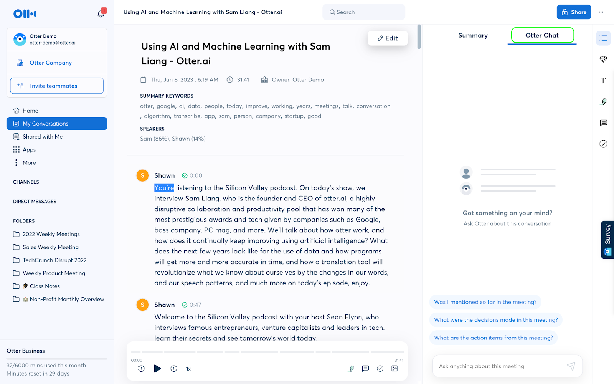

边说边出字：Otter 实时转写背后的云端管道
为什么同一段语音，普通工具要等上传后才出稿，Otter 能边说边滚字？拆解它的实时转写、说话人区分、会后处理三层管道设计与取舍。
一个被忽视的问题：为什么转写要等
你录过会议吧。普通录音转写工具的体验大家都懂：点录音键 → 录完一小时 → 停止 → 等上传 → 等云端处理 → 终于拿到文字稿。从按下停止键到看到稿子，少说也要等十分钟，长的半小时。
问题出在哪？普通工具的架构是批处理——它把整段录音打包上传、云端一次性转写，再把完整稿子推回来。这种模式对转写引擎的压力最低（一次跑一个完整音频，算力利用率高），但用户体验最差：中间什么反馈都没有，录了一小时就白等一小时。
Otter 换了一种管道思路。它让转写引擎边收边跑——你说话的同时，云端已经在处理你刚刚说的那几句，几秒钟延迟就把字滚到屏幕上。录完不用等，稿子就在那里。你要是好奇这套管道长什么样，去官网首页扫一眼就能摸到轮廓。
这套"边流边转"的设计听起来简单，背后的技术取舍却牵出了三条管道的协作。我拆给你看。
第一层管道：实时转写是怎么做到不卡壳的
普通引擎一次吃一小时音频，算力可以集中调度。实时引擎要处理的是连续到来的音频碎片——麦克风每几十毫秒吐一小段，云端必须随到随转，不能积压也不能丢包。
Otter 的做法是把转写引擎拆成了"流式"架构：输入端是一个持续接收音频块的缓冲队列，引擎按 3~5 秒一个 chunk 的粒度滚动处理，每个 chunk 的转写结果立刻推回客户端。用户看到的是文字一行行长出来，实际上背后是几百个小任务在并行跑。
这里有个取舍点值得说——延迟与准确率的矛盾。chunk 切得越细，延迟越低，但每个 chunk 上下文不够（比如一句话说到一半被切断，引擎可能把最后一个词认错）。Otter 选了一个折中点：3 秒 chunk + 后台二次修正。前台先给你一个低延迟的初版文字，转写流结束后引擎再跑一遍全量音频，把上下文补全后的修正版覆盖上去。用户几乎感觉不到，只觉得"刚刚那几个字好像自动变准了"。
这也解释了为什么 Otter 的实时转写必须联网。整个管道都在云端跑，设备端只负责收音和显示。离线模式下它只录音不转，因为本地算力根本顶不住流式引擎的持续输出。想亲身体验这套流式管道，从官方下载安装包装好应用就行——手机端随身可用，网页端桌面办公更顺手。
第二层管道：说话人区分是怎么学会认人的
普通工具转出来的稿子是一坨流水账——全是你的声音，区分不出谁在说话。Otter 的稿子每段前面挂着名字，你标记过一次的人，它之后能自动认出来。
这背后是一套声纹嵌入模型的管道。流程是这样的：
第一次录音时你标记"A 说话""B 说话"，模型从这几段音频里提取每个人的声纹特征向量（你可以把它理解成"声音指纹"——不同人的音色、共振峰、语速节奏在向量空间里各有各的位置）。之后每次新录音，模型先把音频切成语音段，再把每段的声纹向量和已有的几个向量做距离匹配，距离最近的那个就是说话人。
"标记一次自动认人"不是夸张，但也不是 100% 准确。开会时有人感冒嗓子哑了、有人凑到麦克风前大声喊两句，声纹特征会飘，这时模型可能认错。Otter 的补救机制很直接——认错了你手动改一下，它立刻把新的声纹样本补进这个人的向量池，下次就不会再错了。这是一种在线学习的思路，不像传统模型那样要等整批数据重新训练。
第三层管道：会后处理为什么能自动出摘要
录完音，前两层管道的活干完了——你有了一份带说话人的实时稿子。第三层管道接管：自动生成摘要、话题大纲、待办清单。
这里的关键是输入已经不是音频了，而是前两层管道产出的结构化文字稿。Otter 不需要再听一遍音频，直接把转写稿喂给大模型做归纳。这比从音频直接做摘要省了一层转写的算力，而且准确率更高——文字稿里已经有说话人分段和时间戳，大模型可以按话题聚合、按说话人归类、按关键词提取待办。
但这里的取舍也更明显。otter文档里明确写了"AI 回答可能出错或过时，关键信息要用原稿核对"。为什么？因为摘要本质上是大模型的生成，不是事实的抽取——如果转写稿里有几处没转准（比如专有名词错了），大模型的摘要会把这个错带进去。而且免费档有额度限制：每场会话 3 次 Chat 提问，每月共 20 次。这不是算力不够，是产品策略——免费档给你尝鲜，高频使用就得升级。

三层管道拼在一起意味着什么
把这三层管道串起来看，Otter 的核心竞争力不是某一个功能，而是三层管道的协同效率：麦克风的音频流向第一层实时转写 → 转写稿流向第二层说话人区分 → 结构化的稿子流向第三层会后处理。每一层的输出都是下一层的输入，没有中间存储、没有等待队列，整条管道一气呵成。
这套设计意味着它特别适合多人高频的会议场景——你开会时不用盯屏幕，但结束后立刻能看到一份带说话人、带时间戳、带摘要的纪要，甚至可以用 Otter Chat 直接问"刚才谁提了预算""上周的几个会里有没有人说过这个方案"。这些问题对普通录音工具来说是不可想象的，因为它们只有音频，没有结构化的文字层。
但它也有明显的边界。离线场景用不了——整条管道都在云端，没网就只能干录音。单人自言自语的场景浪费——说话人区分管道只识别出一个人，但模型照样跑一遍。隐私极度敏感的场景要三思——音频和转写稿都存在云端，虽然官方承诺加密，但涉密会议可能不适合。
最后补一句
如果你想亲自跑一遍这套管道的体验，装好应用打开就能录。注册很简单——邮箱收验证邮件，免费档不用绑卡，基础功能全开放。手机应用是随身场景的正解，线下会议、访谈、课堂都靠它，网页版适合桌面办公场景。数据自动同步，两端无缝切换。
免费档的额度对个人使用基本够用，每月有足够的转写时长和 Chat 提问次数。真正觉得不够用再考虑升级，四档订阅各有各的上限，按需选就行。整套资料在GitHub、Gitee、GitCode 三个仓库都能拿到，搜索"otter"就能找到对应的分类目录和文档。